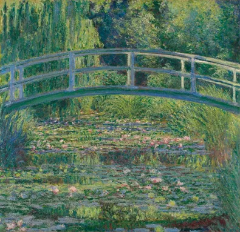

The Waterlily Pond with the Japanese Bridge
Created: 1899
View of a Japanese‑inspired Garden, known as The Water‑Lily Pond – Created by Claude Monet
*The Water‑Lily Pond* is one of Claude Monet’s most iconic works from his celebrated Giverny garden series. The painting features a serene pond filled with water lilies, crossed by a graceful Japanese‑style bridge. Monet’s soft brushwork and vibrant greens capture the peaceful atmosphere of his garden, reflecting his deep fascination with light, water, and nature. It remains one of the defining masterpieces of Impressionism.
A serene glimpse into Monet’s beloved garden at Giverny, The Water‑Lily Pond (1899) captures his fascination with light, reflection, and nature. The curved green bridge, drifting lilies, and soft, hazy colors show Monet moving deeper into Impressionism, painting not just what he saw but how the moment felt.
Type: Impressionist Landscape Painting